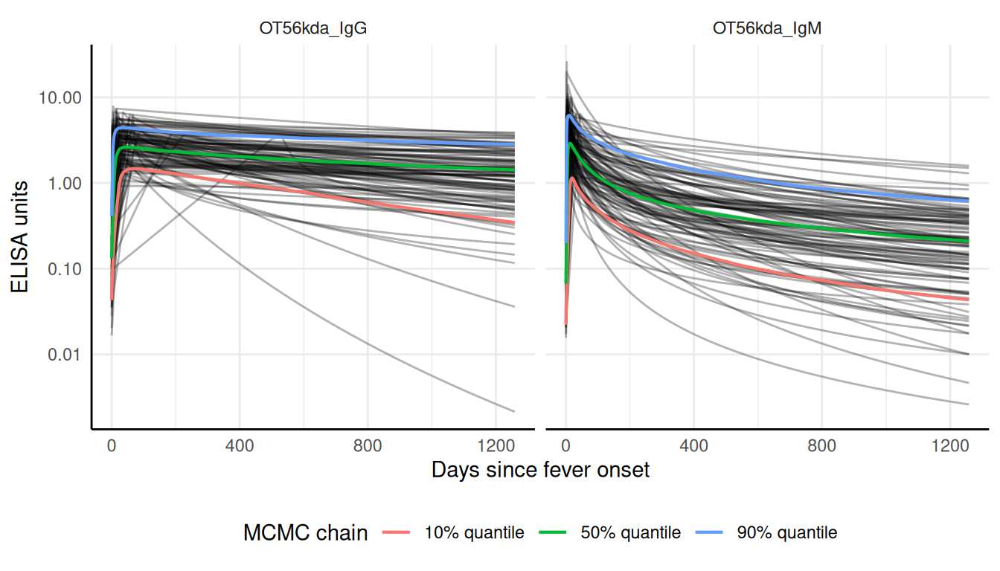
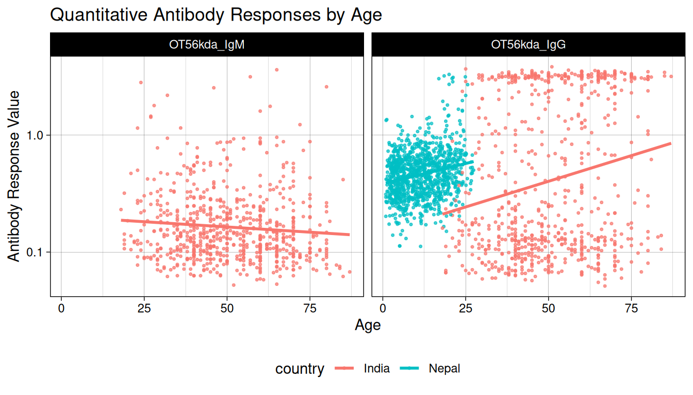
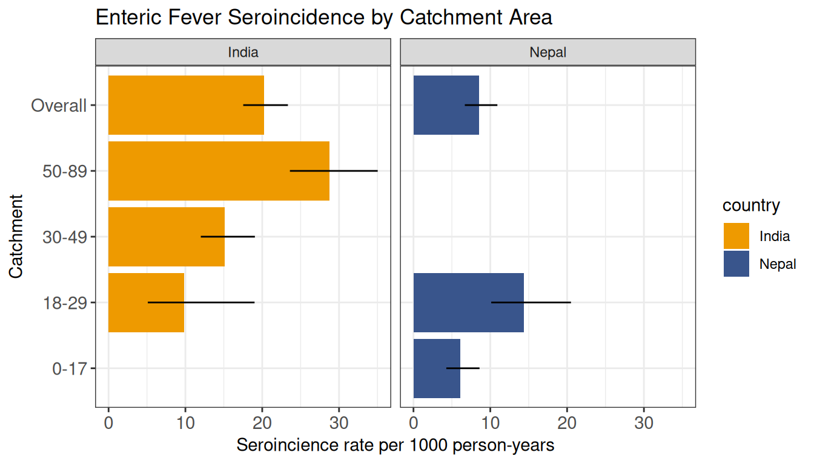

#> Warning: `data` is missing `iter` column
#> It will be inferred from row ordering.Scrub Typhus Seroincidence Vignette
Invalid Date
1 Introduction
This vignette reproduces the analysis for: Estimating the seroincidence of scrub typhus using antibody dynamics following infection (Aiemjoy et al. (Accepted Feb 2024)).
2 Methods
The serocalculator R package provides a rapid and computationally simple method for calculating seroconversion rates, as originally published in Simonsen et al. (2009) and Teunis et al. (2012), and further developed in subsequent publications by deGraaf et al. (2014), Teunis et al. (2016), and Teunis and Eijkeren (2020). In short, longitudinal seroresponses from confirmed cases with a known symptom onset date are assumed to represent the time course of human serum antibodies against a specific pathogen. Therefore, by using these longitudinal antibody dynamics with any cross–sectional sample of the same antibodies in a human population, an incidence estimate can be calculated.
2.1 The Seroincidence Estimator
The serocalculator package was designed to calculate the incidence of seroconversion by using the longitudinal seroresponse characteristics. The distribution of serum antibody concentrations in a cross–sectional population sample is calculated as a function of the longitudinal seroresponse and the frequency of seroconversion (or seroincidence). Given the seroresponse, this marginal distribution of antibody concentrations can be fitted to the cross-sectional data and thereby providing a means to estimate the seroincidence.
3 Scrub Typhus Seroincidence
Scrub typhus, a vector-borne bacterial infection, is an important but neglected disease globally. Accurately characterizing burden is challenging due to non-specific symptoms and limited diagnostics. Prior seroepidemiology studies have struggled to find consensus cutoffs that permit comparing estimates across contexts and time. In this study, we present a novel approach that does not require a cutoff and instead uses information about antibody kinetics after infection to estimate seroincidence. We use data from three cohorts of scrub typhus patients in Chiang Rai, Thailand, and Vellore, India to characterize antibody kinetics after infection and two population serosurveys in the Kathmandu valley, Nepal, and Tamil Nadu, India to estimate seroincidence. The samples were tested for IgM and IgG responses to Orientia tsutsugamushi-derived recombinant 56-kDa antigen using commercial ELISA kits. We used Bayesian hierarchical models to characterize antibody responses after scrub typhus infection and used the joint distributions of the peak antibody titers and decay rates to estimate population-level incidence rates in the cross-sectional serosurveys.
3.1 Load packages
The first step in conducting this analysis is to load our necessary packages. If you haven’t installed already, you will need to do so before loading. We will also need to have the tidyverse and mixtools packages installed for data manipulation and graphics operations we will perform in this vignette. Please see the websites for serocalculator, tidyverse, and mixtools for guidance on installing these packages into your R package library.
Once all three of those packages are installed, we can load them into our active R session environment:
3.2 Load data
Pathogen-specific sample datasets, noise parameters, and longitudinal antibody dynamics for serocalculator are available on the Serocalculator Repository on Open Science Framework (OSF). We will pull this data directly into our R environment.
3.2.1 Load and prepare longitudinal parameter data
We will first load the longitudinal curve parameters to set the antibody decay parameters. These parameters were modeled with Bayesian hierarchical models to fit two-phase power-function decay models to the longitudinal antibody responses among confirmed enteric fever cases.
3.2.2 Visualize curve parameters
We can graph the decay curves with an autoplot() method:

3.2.3 Load and prepare cross-sectional data
Next, we load our sample cross-sectional data.
3.2.4 Check formatting
We can check that xs_data has the correct formatting using the check_pop_data() function:
#> data format is as expected.3.2.5 Summarize antibody data
We can compute numerical summaries of our cross-sectional antibody data with a summary() method for pop_data objects:
#> Warning: There were 2 warnings in `dplyr::summarize()`.
#> The first warning was:
#> ℹ In argument: `across(...)`.
#> ℹ In group 4: `antigen_iso = OT56kda_IgM`, `country = Nepal`.
#> Caused by warning in `min()`:
#> ! no non-missing arguments to min; returning Inf
#> ℹ Run `dplyr::last_dplyr_warnings()` to see the 1 remaining warning.
#>
#> n = 1608
#>
#> Distribution of age:
#>
#> # A tibble: 2 × 8
#> country n min first_quartile median mean third_quartile max
#> <fct> <int> <dbl> <dbl> <dbl> <dbl> <dbl> <dbl>
#> 1 India 721 18 40 49 50.5 62 87
#> 2 Nepal 887 0.9 5.5 10.9 11.6 17.0 27.4
#>
#> Distributions of antigen-isotype measurements:
#>
#> # A tibble: 4 × 8
#> antigen_iso country Min `1st Qu.` Median `3rd Qu.` Max `# NAs`
#> <fct> <fct> <dbl> <dbl> <dbl> <dbl> <dbl> <int>
#> 1 OT56kda_IgG India 0.05 0.111 0.222 2.56 3.81 0
#> 2 OT56kda_IgM India 0.051 0.1 0.139 0.229 3.60 0
#> 3 OT56kda_IgG Nepal 0.112 0.335 0.464 0.602 3.29 0
#> 4 OT56kda_IgM Nepal Inf NA NA NA -Inf 11053.2.6 Visualize antibody data
Let’s also take a look at how antibody responses change by age.
#> Warning: Removed 1105 rows containing missing values or values outside the scale range
#> (`geom_point()`).
3.3 Compile noise parameters
Next, we must set conditions based on some assumptions about the data and errors that may need to be accounted for. This will differ based on background knowledge of the data.
The biological noise, \(\nu\) (“nu”), represents error from cross-reactivity to other antibodies. Measurement noise, \(\varepsilon\) (“epsilon”), represents error from the laboratory testing process.
Formatting Specifications: Noise parameter data should be a dataframe with one row for each antigen isotype and columns for each noise parameter below.
| Column Name | Description |
|---|---|
| y.low | Lower limit of detection of the antibody assay |
| nu | Biologic noise |
| y.high | Upper limit of detection of the antibody assay |
| eps | Measurement noise |
Note that variable names are case-sensitive.
#> number of iterations= 35
#> number of iterations= 244 Estimate Seroincidence by study site
Now we are ready to begin estimating seroincidence. We will use est.incidence.by to calculate stratified seroincidence rates.
#> Warning: `curve_params` is missing all strata variables and will be used unstratified.
#> ℹ To avoid this warning, specify the desired set of stratifying variables in
#> the `curve_strata_varnames` and `noise_strata_varnames` arguments to
#> `est_seroincidence_by()`.
#> Warning: `noise_params` is missing all strata variables and will be used unstratified.
#> ℹ To avoid this warning, specify the desired set of stratifying variables in
#> the `curve_strata_varnames` and `noise_strata_varnames` arguments to
#> `est_seroincidence_by()`.
#> Seroincidence estimated given the following setup:
#> a) Antigen isotypes : OT56kda_IgG
#> b) Strata : country
#>
#> Seroincidence estimates:
#> # A tibble: 2 × 14
#> Stratum country n est.start incidence.rate SE CI.lwr CI.upr se_type
#> <chr> <fct> <int> <dbl> <dbl> <dbl> <dbl> <dbl> <chr>
#> 1 Stratum… India 721 0.1 0.0202 0.00148 0.0175 0.0233 standa…
#> 2 Stratum… Nepal 1105 0.1 0.00854 0.00107 0.00668 0.0109 standa…
#> # ℹ 5 more variables: coverage <dbl>, log.lik <dbl>, iterations <int>,
#> # antigen.isos <chr>, nlm.convergence.code <ord>5 Estimate Seroincidence by study site and age strata
Now we are ready to begin estimating seroincidence. We will use est.incidence.by to calculate stratified seroincidence rates.
#> Warning: Some strata are completely missing one or more biomarkers.
#> , , antigen_iso = OT56kda_IgM
#>
#> ageQ
#> country 0-17 18-29 30-49 50-89
#> India 0 59 302 360
#> Nepal 876 229 0 0
#>
#> , , antigen_iso = OT56kda_IgG
#>
#> ageQ
#> country 0-17 18-29 30-49 50-89
#> India 0 59 302 360
#> Nepal 876 229 0 0
#> Warning: `curve_params` is missing all strata variables and will be used unstratified.
#> ℹ To avoid this warning, specify the desired set of stratifying variables in
#> the `curve_strata_varnames` and `noise_strata_varnames` arguments to
#> `est_seroincidence_by()`.
#> Warning: `noise_params` is missing all strata variables and will be used unstratified.
#> ℹ To avoid this warning, specify the desired set of stratifying variables in
#> the `curve_strata_varnames` and `noise_strata_varnames` arguments to
#> `est_seroincidence_by()`.
#> Seroincidence estimated given the following setup:
#> a) Antigen isotypes : OT56kda_IgG
#> b) Strata : country, ageQ
#>
#> Seroincidence estimates:
#> # A tibble: 5 × 15
#> Stratum country ageQ n est.start incidence.rate SE CI.lwr CI.upr
#> <chr> <fct> <fct> <int> <dbl> <dbl> <dbl> <dbl> <dbl>
#> 1 Stratum 1 India 18-29 59 0.1 0.00985 0.00330 0.00511 0.0190
#> 2 Stratum 2 India 30-49 302 0.1 0.0151 0.00178 0.0120 0.0190
#> 3 Stratum 3 India 50-89 360 0.1 0.0288 0.00290 0.0236 0.0350
#> 4 Stratum 4 Nepal 0-17 876 0.1 0.00606 0.00108 0.00428 0.00860
#> 5 Stratum 5 Nepal 18-29 229 0.1 0.0144 0.00259 0.0101 0.0205
#> # ℹ 6 more variables: se_type <chr>, coverage <dbl>, log.lik <dbl>,
#> # iterations <int>, antigen.isos <chr>, nlm.convergence.code <ord>Let’s visualize our seroincidence estimates by strata.

6 Acknowledgments
We gratefully acknowledge the study participants for their valuable time and interest in participating in these studies
7 Funding
This work was supported by the National Institutes of Health Fogarty International Center (FIC) at [K01 TW012177] and the National Institute of Allergy and Infectious Diseases (NIAID) [R21 1AI176416]
8 References
Aiemjoy, Kristen, Nishan Katuwal, Krista Vaidya, et al. Accepted Feb 2024. “Estimating the Seroincidence of Scrub Typhus Using Antibody Dynamics Following Infection.” American Journal of Tropical Medicine and Hygiene, Accepted Feb 2024.
deGraaf, W. F., M. E. E. Kretzschmar, P. F. M. Teunis, and O. Diekmann. 2014. “A Two-Phase Within-Host Model for Immune Response and Its Application to Serological Profiles of Pertussis.” Epidemics 9 (December): 1–7. https://doi.org/10.1016/j.epidem.2014.08.002.
Simonsen, J., K. Mølbak, G. Falkenhorst, K. A. Krogfelt, A. Linneberg, and P. F. M. Teunis. 2009. “Estimation of Incidences of Infectious Diseases Based on Antibody Measurements.” Statistics in Medicine 28 (14): 1882–95. https://doi.org/10.1002/sim.3592.
Teunis, P. F. M., and J. C. H. van Eijkeren. 2020. “Estimation of Seroconversion Rates for Infectious Diseases: Effects of Age and Noise.” Statistics in Medicine 39 (21): 2799–814. https://doi.org/10.1002/sim.8578.
Teunis, P. F. M., J. C. H. van Eijkeren, W. F. de Graaf, A. Bonačić Marinović, and M. E. E. Kretzschmar. 2016. “Linking the Seroresponse to Infection to Within-Host Heterogeneity in Antibody Production.” Epidemics 16 (September): 33–39. https://doi.org/10.1016/j.epidem.2016.04.001.
Teunis, P. F. M., JCH van Eijkeren, CW Ang, et al. 2012. “Biomarker Dynamics: Estimating Infection Rates from Serological Data.” Statistics in Medicine 31 (20): 2240–48. https://doi.org/10.1002/sim.5322.